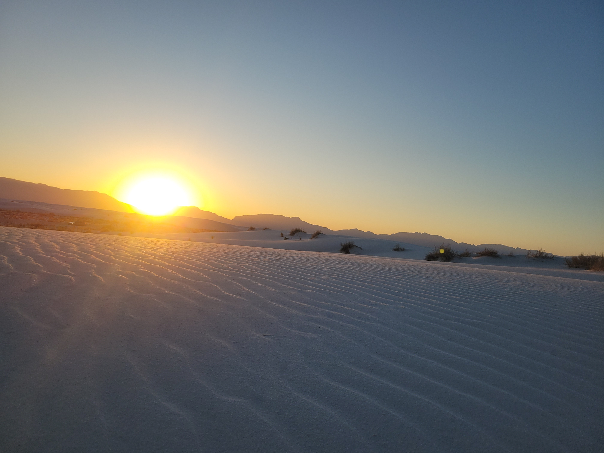

Publications
Peer-Reviewed Journal Articles
- Hallinger, K., Pegan, T. M., Andersen, M. J., Ardia, D. R., Belmaker, A., Chang van Oordt, D., Ferretti, V., Forsman, A. M., Gaul, J. R., Llambias, P. E., Orzechowski, S. C., Shipley, J. R., Stager, M., Taff, C. C., Uehling, J. J., Verhoeven, M. A., Vitousek, M. N., Wilson, M., Yoon, H. S., Wrege, P. H., & Winkler, D. W. (2025). Comparing tree swallow dispersal strategies in a continuous mainland environment. Ecology.
- Yoon, H. S., Mingie, J., Cho, S., Barve, N., & Armsworth, P. R. (2025). Land market feedback from land acquisition influences the prioritization of protected area networks in the southeastern United States. Ambio.
- Armsworth, P. R., Fovargue, R., Hyman, A., Iacona, G., Sims, C., & Yoon, H. S. (2025). Strategically timing land protection decisions to enhance biodiversity benefits. Conservation Biology.
- Yoon, H. S. & Armsworth, P. R. (2025). The role of wealth inequality in community management of common-pool resources through voluntary sanctioning. Natural Resource Modeling.
-
Yoon, H. S., Corsi, F., Miara, A., Welch, J., & Jager, H. (2024).
Climate-driven shifts in freshwater biodiversity will impact mitigation costs for hydropower.
Science of the Total Environment, 954(1).
Cited in drafting the 2025 Tennessee State Wildlife Action Plan. - Jager, H., Manning, K., Welch, J. N., Corsi, F., Miara, A., Yoon, H. S., McManamay, R. A., Kao, S., Kusnierz, P. C., & Gangrade, S. (2024). Indicators of thermal alteration in U.S. waters reveal patterns of climate risk at the energy–water nexus. Ecological Indicators, 159, 111755.
- Yoon, H. S., Vijay, V., & Armsworth, P. R. (2022). Accounting for spatial heterogeneity in the added conservation value of land protection when prioritizing protected areas. Conservation Biology, 36(5).
- Yoon, H. S. & Armsworth, P. R. (2022). Timing land protection to exploit favorable market conditions. Biological Conservation, 270.
- Gibson, N. L., Green, E. A., Herrera, R. G. A., Love, S. J., Turner, S. C., Weatherton, M., Faidiga, A. S., Luo, A. R., Ngoh, M. L., Shershen, E., Yoon, H. S., & Blum, M. J. (2021). Toward an ecology of disasters: a primer for the pursuit of ecological research on disasters. Ecology and Society, 26(4).
- Winkler, D. W., Hallinger, K. K., Pegan, T. M., Taff, C. C., Verhoeven, M. A., Chang van Oordt, D., Stager, M., Uehling, J. J., Vitousek, M. N., Andersen, M. J., Ardia, D. R., Belmaker, A., Ferretti, V., Forsman, A. M., Gaul, J. R., Llambias, P. E., Orzechowski, S. C., Shipley, J. R., Wilson, M., & Yoon, H. S. (2020). Full lifetime perspectives on the costs and benefits of lay-date variation in tree swallows. Ecology, 101(9).
- Getz, W. M., Salter, R., Muellerklein, O., Yoon, H. S., & Tallam, K. (2018). Modeling epidemics: A primer and Numerus Model Builder implementation. Epidemics, 25, 9–19.
In Review / Accepted
- Jager, H. & Yoon, H. S. (2025). Data centers: an emerging threat to U.S. freshwater biodiversity. Water Biology and Security. (accepted)
- Hyman, A. A., Yoon, H. S., Barve, N., Jantz, S. M., Cho, S., & Armsworth, P. R. (2025). Time horizons over which conservation outcomes will be evaluated influence today’s land protection priorities. Journal for Nature Conservation. (in review)
Other Publications
- Bonilla, G., Conduff, L., Gibson, N., Love, S. J., Rogers, A., Walton, J., Yoon, H. S., & Armsworth, P. R. (2021). Associations between social vulnerability and environmental quality in the southeastern United States. Southeast Climate Adaptation Science Center White Paper.
- Carlson, C. J., Muellerklein, O. C., Phillips, A. J., Burgio, K. R., Castaldo, G., Cizauskas, C. A., Cumming, G., Dallas, T. A., Doi, J., Miao, Z., Proctor, H., Yoon, H. S., & Getz, W. M. (2017). The Parasite Extinction Assessment & Red List: An open-source biodiversity database for neglected symbionts. bioRxiv, 192351.
- Yoon, H. S. (2011). Boy asks for the path on a tideland: A youth’s perspective on the Saemangeum tideland conservation movement. Ddein-dol. (Korean publication)


